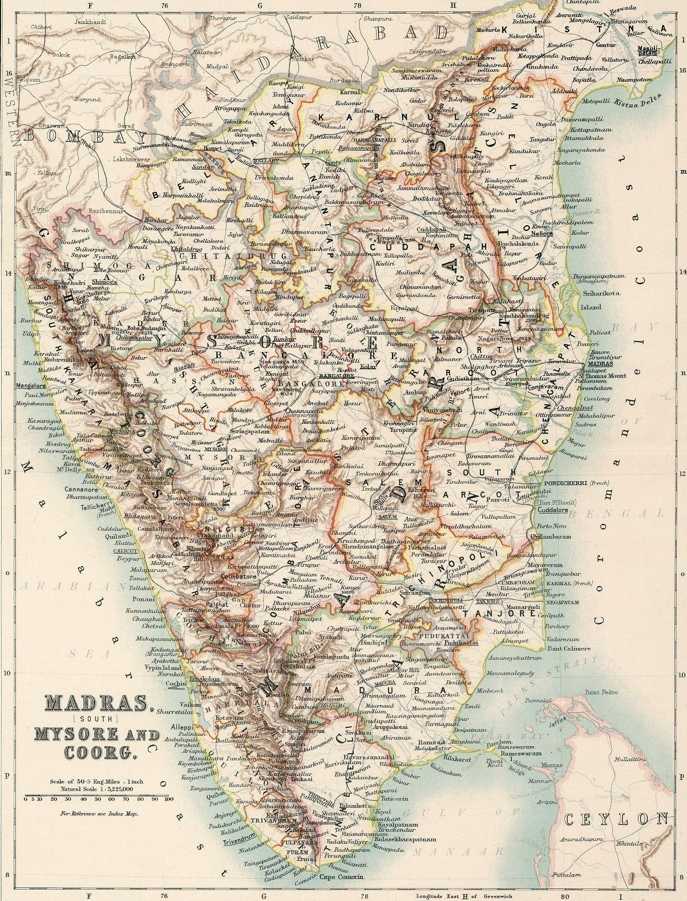
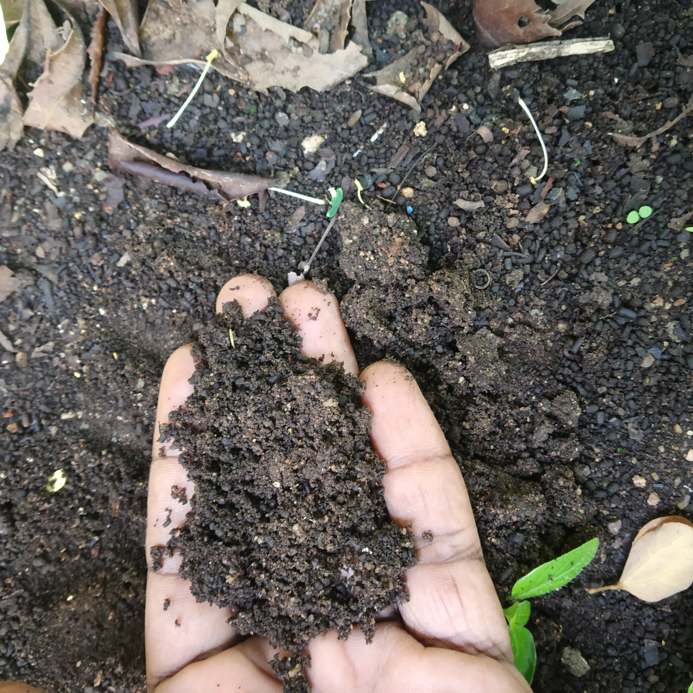
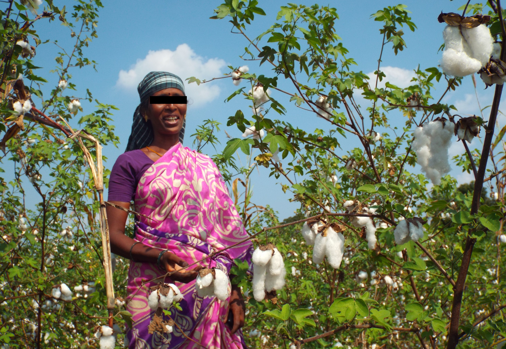
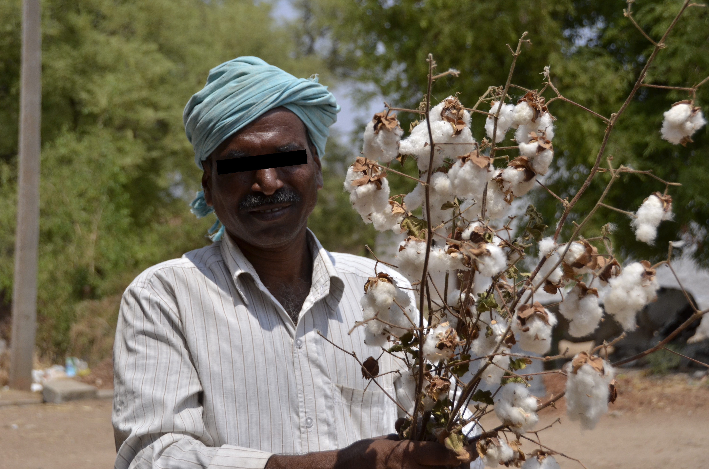

To know the fabric,
One must stand in its soil.
The Regur Basin

Terroir: Perambalur
Mineral-rich Regur soil. Ancestral home of the fiber.
Estate: Tiruppur
The Atelier.
Where the raw fiber finds form.
The Ancient Stewardship

The Karisal—dark, mineral-rich black soils that demands botanical resilience.

We preserve the soil's air-pockets through the pace of the bullock and the hand-plough.

A matriarchal lineage preserving botanical sovereignty.
Every boll harvested with wisdom.
The Gossamer Proof
In the Indus Valley, a silver jar held a secret: a fragment of cotton miraculously preserved for 5,000 years. DNA analysis of the 5,000-year-old Mohenjo-Daro fragment confirms a shared ancestral marker with our Karunganni. This is not a new luxury; it is a biological resumption.
